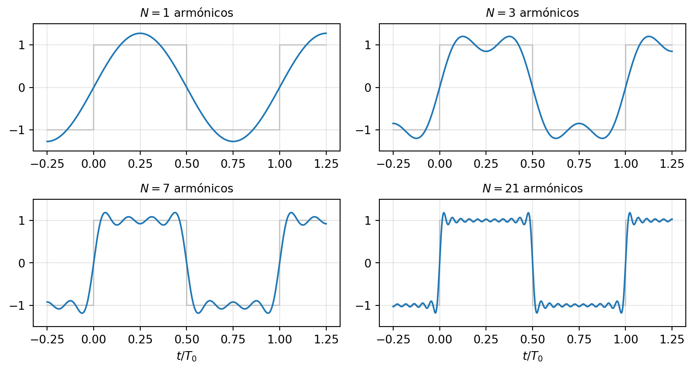
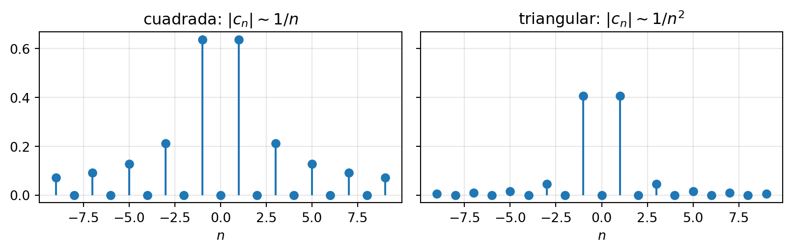
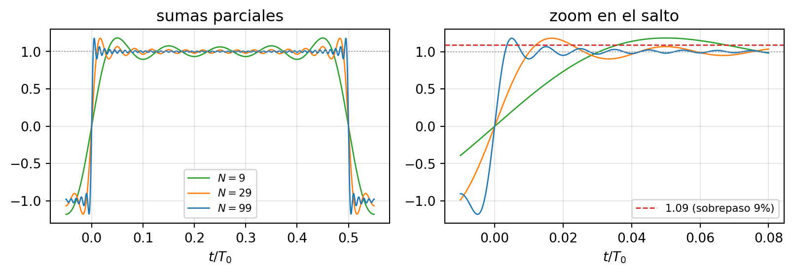
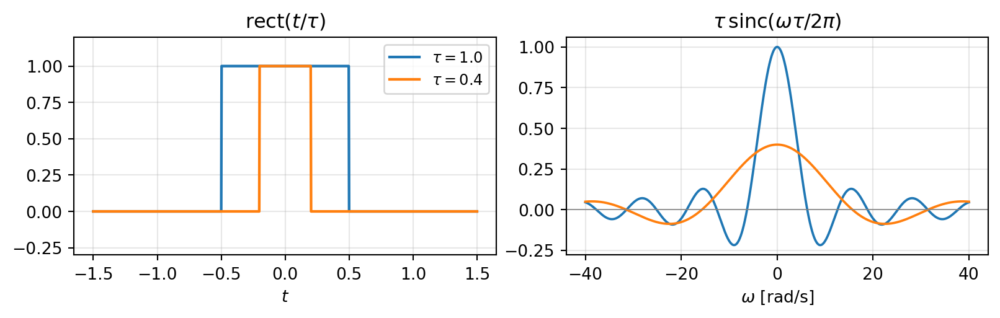
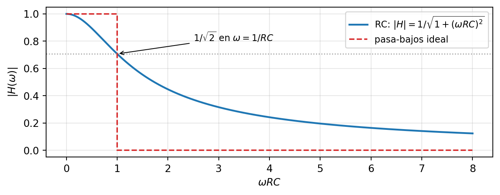

3 El dominio de la frecuencia
NotaObjetivos del capítulo [U3.1–U3.7]
Al terminar este capítulo podrás: explicar la serie de Fourier como una proyección ortogonal — producto interno, mejor aproximación, Bessel y Parseval [U3.1]; calcular coeficientes de señales estándar en forma exponencial y trigonométrica, y transformadas por definición y por propiedades [U3.2, U3.4]; leer un espectro cualitativamente: simetrías, decaimiento según suavidad, Gibbs [U3.3]; manejar los pares canónicos y las propiedades de la transformada, en especial convolución ↔︎ multiplicación [U3.4]; analizar sistemas LTI en frecuencia: H(\omega), filtrado, respuesta a señales periódicas [U3.5]; identificar e^{j\omega t} como autofunción de los sistemas LTI — el origen de H(\omega) [U3.6]; y aplicar el teorema de autocorrelación R_x \leftrightarrow |X(\omega)|^2, con Parseval como su caso particular [U3.7].
Prerrequisitos: las señales del capítulo 1 (en particular la exponencial compleja de la Sección 1.4.1 y el impulso de la Sección 1.5) y la convolución del capítulo 2. Este capítulo cobra varias promesas plantadas allá.
3.1 Una integral que se anula
En el capítulo 1, al demostrar que la energía se reparte entre las partes par e impar de una señal (Sección 1.2.4), apareció un hecho aparentemente menor: \int_{-\infty}^{\infty} \underbrace{P(t)}_{\text{par}}\,\underbrace{I(t)}_{\text{impar}}\,dt = 0 — la integral de par por impar se anula, y por eso los términos cruzados desaparecen. Dijimos entonces que esa integral “pagaría el sueldo” más adelante. Este es el capítulo donde paga: esa integral nula significa algo geométrico — la parte par y la parte impar de una señal son perpendiculares — y esa geometría, tomada en serio, produce la herramienta más importante de la ingeniería eléctrica: el análisis de Fourier.
Y una segunda pregunta para dejar picando, esta vez musical. Una flauta y un violín tocan el mismo La₄ (440 Hz): misma nota, misma altura — y nadie en la sala los confunde. La diferencia se llama timbre, y por ahora es una palabra de músicos. Al final de la Sección 3.3 será una fórmula.
3.2 Señales como vectores
3.2.1 La proyección como sombra
Volvamos al lugar donde “perpendicular” es obvio: las flechas. Un vector \mathbf{v} y una dirección \mathbf{b}. Si iluminamos perpendicular a \mathbf{b}, la sombra de \mathbf{v} sobre la línea de \mathbf{b} es su proyección: la componente de \mathbf{v} “en la dirección de” \mathbf{b}. La herramienta que la calcula es el producto punto, \mathbf{v}\cdot\mathbf{b} = \|\mathbf{v}\|\,\|\mathbf{b}\|\cos\theta = v_x b_x + v_y b_y, cuyas dos formas son la misma (la ley de los cosenos las conecta — ejercicio de dos líneas si quieres verificarlo). La lectura importante: \cos\theta es un medidor de parecido. Máximo si los vectores apuntan igual, cero si son perpendiculares. Con él, la fórmula de la sombra: \operatorname{proy}_{\mathbf{b}}(\mathbf{v}) = \left(\frac{\mathbf{v}\cdot\mathbf{b}}{\|\mathbf{b}\|^2}\right)\mathbf{b}
3.2.2 El salto: las funciones son vectores
Las funciones se suman y se multiplican por escalar igual que las flechas — cumplen los mismos axiomas, así que son vectores de un espacio vectorial. Solo les falta un producto punto. En \mathbb{R}^n era “multiplicar componente a componente y sumar”; el análogo continuo de la suma es la integral:
ImportanteDefinición: producto interno de señales
Para señales f, g en un intervalo [T_1, T_2]: \langle f, g\rangle = \int_{T_1}^{T_2} f(t)\,g^*(t)\,dt (el conjugado hace que funcione también con señales complejas). Dos señales son ortogonales si \langle f, g\rangle = 0.
Dos consecuencias inmediatas, y las dos importan:
- Norma al cuadrado = energía: \|f\|^2 = \langle f, f\rangle = \int |f(t)|^2\,dt — ¡la energía del capítulo 1! La geometría y la física acaban de darse la mano.
- La integral que abrió el capítulo dice ahora, con todas sus letras: toda señal par es ortogonal a toda señal impar.
Verificación de un caso famoso, en dos líneas: \langle \sin t, \cos t\rangle = \int_{-\pi}^{\pi} \sin t \cos t \,dt = \frac{1}{2}\int_{-\pi}^{\pi}\sin(2t)\,dt = 0 Senos y cosenos son ortogonales — otra vez par por impar. Menos obvio y más importante: \cos t y \cos 2t también son ortogonales en [-\pi,\pi], y ahí la paridad no ayuda — hay que integrar (producto a suma: \cos t\cos 2t = \tfrac12[\cos t + \cos 3t], y ambas integran cero en el período). Esa segunda ortogonalidad, la de armónicos distintos entre sí, es la que hará funcionar todo lo que sigue.
3.2.3 Proyección = la mejor aproximación posible
Supón que quieres aproximar \mathbf{v} = (3, 4) usando solo múltiplos del eje x: \tilde{\mathbf{v}} = (c, 0). ¿Qué c minimiza el error \|\mathbf{v}-\tilde{\mathbf{v}}\|? La respuesta es c = 3 — la proyección — y la firma de esa respuesta es que el error resultante (0,4) queda perpendicular al eje: cualquier otro c agrega error a lo largo del eje sin quitar nada. Ese es el patrón general:
Teorema de la mejor aproximación. La proyección ortogonal de x sobre un subespacio W es el elemento de W más cercano a x (mínima norma del error), y se reconoce porque el error queda ortogonal a todo W. Si W tiene una base ortonormal \{\phi_1,\dots,\phi_N\} — ejes perpendiculares de largo 1, \langle\phi_k,\phi_\ell\rangle = \delta_{k\ell} —, la proyección es una suma de sombras independientes: P_W\,x = \sum_{k=1}^{N} \underbrace{\langle x, \phi_k\rangle}_{\text{cuánto de } x \text{ hay en } \phi_k}\,\phi_k
TipEjemplo resuelto: el prototipo de todo el capítulo
Proyecta \mathbf{v}=(3,4,5) sobre el plano xy, con base ortonormal \{\hat{e}_x, \hat{e}_y\}.
Solución. P_W\mathbf{v} = \langle\mathbf{v},\hat{e}_x\rangle\,\hat{e}_x + \langle\mathbf{v},\hat{e}_y\rangle\,\hat{e}_y = 3\,\hat{e}_x + 4\,\hat{e}_y = (3,4,0) El error es \mathbf{e} = (0,0,5), perpendicular al plano ✓, y \|\mathbf{e}\| = 5 es la distancia de \mathbf{v} al plano: nadie en W le gana a (3,4,0).
La traducción a señales — léela despacio, es la frase del capítulo: aproximar una señal x(t) con una suma de funciones base \phi_k(t) es exactamente esto. Los coeficientes \langle x,\phi_k\rangle son sombras; la aproximación es la proyección; y es la mejor posible en el sentido de mínima energía del error. En la sección siguiente las \phi_k serán sinusoides — y los coeficientes se llamarán de Fourier.
3.2.4 Bessel y Parseval: la energía se reparte
Como los ejes ortonormales no compiten entre sí (Pitágoras generalizado), la energía de la proyección es la suma de las energías por eje:
ImportanteBessel y Parseval
Para cualquier conjunto ortonormal \{\phi_k\} (desigualdad de Bessel): las sombras nunca acumulan más energía que la señal, \sum_k |\langle x,\phi_k\rangle|^2 \le \|x\|^2. Si además la base es completa — nada no-nulo queda perpendicular a todos los ejes — la desigualdad se vuelve igualdad de Parseval: \sum_k |\langle x,\phi_k\rangle|^2 = \|x\|^2. La representación no pierde ni inventa energía.
Y una relectura sorpresa: la identidad E_x = E_{x_p} + E_{x_i} del capítulo 1 (Sección 1.2.4) es Parseval, con la “base” de dos subespacios ortogonales {señales pares, señales impares}. La demostraste en la primera semana del curso sin saber que era un teorema de geometría infinito-dimensional [DB E0022 entonces; DB E0166 lo generaliza].
Honestidad matemática (treinta segundos y seguimos): la completitud de las bases que usaremos no la demostraremos — es un teorema serio de análisis. La usaremos con la conciencia tranquila de que es cierta.
3.3 La serie de Fourier
3.3.1 La base estrella
Sea x(t) periódica de período T_0, con frecuencia fundamental \omega_0 = 2\pi/T_0. Los “ejes” que propuso Fourier: todos los armónicos de la fundamental, en versión fasor (Sección 1.4.1), \phi_n(t) = e^{jn\omega_0 t}, \qquad n \in \mathbb{Z}, con el producto interno de un período, normalizado: \langle f,g\rangle = \frac{1}{T_0}\int_{T_0} f(t)\,g^*(t)\,dt. Son ortonormales — esta es la integral del capítulo, vale la pena mirarla dos veces: \langle \phi_n, \phi_m\rangle = \frac{1}{T_0}\int_{T_0} e^{j(n-m)\omega_0 t}\,dt = \begin{cases} 1 & n = m\\ 0 & n \neq m\end{cases} El caso n\neq m es cero porque el integrando es un fasor que da |n-m| vueltas completas al círculo en un período: su promedio es el centro, cero. Es la ortogonalidad de senos y cosenos de la Sección 3.2.2, empaquetada en una sola familia compleja. Y la base es completa (lo aceptamos sin demostrar): proyectar sobre ella no pierde nada. Aplicando literalmente la fórmula de proyección con infinitos ejes:
ImportanteLa serie de Fourier
Síntesis (reconstruir la señal sumando sus componentes): x(t) = \sum_{n=-\infty}^{\infty} c_n\, e^{jn\omega_0 t} Análisis (cada coeficiente es una sombra: c_n = \langle x, \phi_n\rangle): c_n = \frac{1}{T_0}\int_{T_0} x(t)\, e^{-jn\omega_0 t}\,dt El intervalo \int_{T_0} es cualquier período completo — [0,T_0] o [-T_0/2, T_0/2], el que convenga.
No hay receta mágica: c_n es la proyección de x sobre el armónico n — cuánto de x “apunta en la dirección” del fasor que gira a n\omega_0 rad/s. Todo lo que sabes de proyecciones (mejor aproximación, error ortogonal, Parseval) aplica automáticamente.
3.3.2 Forma trigonométrica
Para señales reales los coeficientes vienen en pares conjugados, c_{-n} = c_n^* (conjuga la fórmula de análisis para verificarlo [DB E0080]). Agrupando cada par \pm n con Euler, c_n e^{jn\omega_0 t} + c_n^* e^{-jn\omega_0 t} = 2\,\Re\{c_n e^{jn\omega_0 t}\}, la serie se reescribe con senos y cosenos: x(t) = a_0 + \sum_{n=1}^{\infty}\big(a_n \cos(n\omega_0 t) + b_n\sin(n\omega_0 t)\big) a_0 = \frac{1}{T_0}\int_{T_0} x(t)\,dt \qquad a_n = \frac{2}{T_0}\int_{T_0} x(t)\cos(n\omega_0 t)\,dt \qquad b_n = \frac{2}{T_0}\int_{T_0} x(t)\sin(n\omega_0 t)\,dt
El diccionario entre formas se usa todo el semestre: a_0 = c_0, \;a_n = 2\,\Re\{c_n\}, \;b_n = -2\,\Im\{c_n\}. Nota que a_0 es simplemente el promedio de la señal (su nivel DC). La exponencial es más compacta para demostrar; la trigonométrica es más física para señales reales; conviene moverse entre ambas con soltura.
Aquí se cobra otra promesa del capítulo 1: toda sinusoide real son dos fasores contrarrotantes, \cos(\omega_0 t) = \tfrac12 e^{j\omega_0 t} + \tfrac12 e^{-j\omega_0 t}. En el lenguaje de hoy eso se lee directo: los coeficientes de \cos(\omega_0 t) son c_{\pm 1} = \tfrac12 y nada más — dos líneas en el espectro, una en \omega_0 y otra en -\omega_0. Las frecuencias negativas no son misticismo: son el fasor que gira al revés, el que hace falta para que la suma sea real.
Ese mismo razonamiento es el atajo que más puntos da en la I2 — coeficientes por inspección: si la señal ya es una suma de sinusoides, no se integra nada. x(t) = 1 + \cos(2\pi t) tiene c_0 = 1, c_{\pm 1} = \tfrac12, y se acabó el problema [DB E0075 entrena esto].
3.3.3 Ejemplo mayor: la onda cuadrada
TipEjemplo resuelto (calibre I2): coeficientes de la onda cuadrada
Sea x(t) la onda cuadrada impar de período T_0: +1 en 0<t<T_0/2, -1 en -T_0/2<t<0. Encuentra sus coeficientes y su forma trigonométrica.
Solución. El promedio es nulo: c_0 = 0. Para n \neq 0: c_n = \frac{1}{T_0}\left[\int_{-T_0/2}^{0}(-1)e^{-jn\omega_0 t}\,dt + \int_{0}^{T_0/2}(+1)e^{-jn\omega_0 t}\,dt\right] Integrando cada tramo y usando \omega_0 T_0 = 2\pi y e^{\pm jn\pi} = (-1)^n: c_n = \frac{1}{jn\omega_0 T_0}\Big[2 - \big(e^{jn\pi} + e^{-jn\pi}\big)\Big] = \frac{2 - 2(-1)^n}{j2\pi n} = \frac{1-(-1)^n}{j\pi n} = \begin{cases} \dfrac{2}{j\pi n} & n \text{ impar}\\[4pt] 0 & n \text{ par} \end{cases} Los c_n son imaginarios puros (señal impar — la regla general viene en la Sección 3.4.2), así que a_n = 0 y b_n = -2\,\Im\{c_n\} = \dfrac{4}{\pi n} para n impar: x(t) = \frac{4}{\pi}\left(\sin(\omega_0 t) + \frac{\sin(3\omega_0 t)}{3} + \frac{\sin(5\omega_0 t)}{5} + \cdots\right) Chequeo de cordura: solo senos (impar ✓), solo armónicos impares, amplitudes decayendo como 1/n.
Mira la reconstrucción en acción — la suma parcial con N términos es la proyección de la cuadrada sobre los primeros N armónicos, es decir, la mejor aproximación posible con ese presupuesto:
Y Parseval paga de inmediato. La potencia de la cuadrada es 1 (vale \pm 1 en todas partes). La que carga el par fundamental n=\pm1 es 2\left|\frac{2}{j\pi}\right|^2 = \frac{8}{\pi^2} \approx 0.81: el 81 % de la potencia de una onda cuadrada vive en su fundamental. Por eso una cuadrada “se oye” como una nota con esa altura.
Lo que responde por fin la pregunta de la flauta y el violín. Ambos tocan La₄: misma \omega_0, por eso son la misma nota. Pero sus espectros reparten la energía distinto: la flauta concentra casi todo en los primeros armónicos (sonido “puro”, redondo); el violín reparte energía hasta armónicos altos (sonido “brillante” — la cuerda frotada tiene esquinas, como la cuadrada). El timbre es el módulo de los coeficientes de Fourier: la altura es \omega_0; el color del sonido es cómo decae |c_n|.
3.4 El espectro se lee sin integrar
La fórmula de análisis funciona siempre — pero integrar cada vez es de peón. Esta sección es el oficio: propiedades y reglas de lectura que entregan la estructura del espectro antes de calcular nada. Notación: x(t) \leftrightarrow c_n.
3.4.1 Tres propiedades que ahorran integrales
| Propiedad | Fórmula | Lectura |
|---|---|---|
| Linealidad | A\,x + B\,y \leftrightarrow A\,c_n + B\,d_n | espectros conocidos se combinan; sumar DC solo cambia c_0 |
| Desplazamiento | x(t-t_0) \leftrightarrow c_n\,e^{-jn\omega_0 t_0} | \lvert c_n \rvert no cambia; solo se agrega fase lineal en n |
| Derivación | x'(t) \leftrightarrow (jn\omega_0)\,c_n | derivar amplifica agudos (pasa-altos); integrar los atenúa |
Las tres demostraciones son de una línea (linealidad de la integral; cambio de variable; derivar la síntesis término a término) — hazlas una vez y quédatelas. La segunda tiene una lectura musical que conviene guardar: retrasar una canción no le cambia el timbre. El oído es, en primera aproximación, sordo a la fase y sensible a |c_n|.
3.4.2 Simetrías: la promesa del capítulo 1, pagada
En el capítulo 1 dijimos que clasificar simetrías hoy era “leer espectros gratis mañana”. Es hoy. La tabla completa — y las tres filas salen del mismo argumento par×impar que abrió el capítulo:
| Si x(t) real es… | entonces… | la serie tiene… |
|---|---|---|
| par (x(-t)=x(t)) | c_n reales | solo cosenos (b_n = 0) |
| impar (x(-t)=-x(t)) | c_n imaginarios puros | solo senos (a_n = 0, incluso a_0=0) |
| simétrica de media onda (x(t-\tfrac{T_0}{2}) = -x(t)) | c_n = 0 para n par | solo armónicos impares |
Las dos primeras: en c_n = \frac{1}{T_0}\int x(t)\,[\cos(n\omega_0 t) - j\sin(n\omega_0 t)]\,dt, si x es par la parte con \sin multiplica par×impar e integra cero (queda solo lo real); si es impar, al revés. La tercera se demuestra con la propiedad de desplazamiento — una propiedad demostrando otra, así se trabaja en esta unidad: si y(t) = x(t-\tfrac{T_0}{2}), entonces d_n = c_n e^{-jn\pi} = (-1)^n c_n; imponer y = -x da (-1)^n c_n = -c_n, que obliga c_n = 0 para n par. La onda cuadrada es impar y de media onda: solo senos, solo impares — exactamente lo que calculamos.
En las interrogaciones esta tabla también se usa al revés: de “la señal solo tiene armónicos impares y es par” a dibujar la forma de onda. Dominar ambas direcciones es calibre I2 exacto [DB E0076].
3.4.3 Suavidad y decaimiento: el espectro delata las esquinas
Compara dos señales y sus espectros:
- Onda cuadrada (discontinua — tiene saltos): |c_n| = \frac{2}{\pi n} en los impares — decae como 1/n.
- Onda triangular par de amplitud \pm 1 (continua, pero con puntas: derivada discontinua): c_n = \frac{4}{\pi^2 n^2} en los impares — decae como 1/n^2.

No es coincidencia, y la propiedad de derivación lo explica: la derivada de la triangular es una cuadrada (pendientes constantes \pm). Si c_n^{\text{tri}} \sim 1/n^2, entonces (jn\omega_0)\,c_n^{\text{tri}} \sim 1/n — el espectro de una cuadrada, como corresponde. Cada derivada que la señal “aguanta” antes de romperse compra un factor 1/n extra:
Regla del decaimiento: saltos ⇒ 1/n; continua con puntas ⇒ 1/n^2; derivada continua ⇒ 1/n^3; … cuanto más suave la señal, más rápido muere su espectro. El espectro es un detector de esquinas: reproducir esquinas afiladas exige armónicos altos, y un sistema que corta agudos redondea las esquinas (semilla directa de la Sección 3.6).
3.4.4 Truncar la serie: el fenómeno de Gibbs
En la práctica nadie suma infinitos armónicos: se trunca la serie en N términos. Ya viste en la figura de la cuadrada que junto al salto asoma una “oreja”. La pregunta natural — ¿desaparece al subir N? — tiene una respuesta sorprendente: no.

La explicación honesta en un minuto: la serie truncada converge en energía (la norma del error tiende a cero — eso garantiza Parseval), pero no uniformemente en el salto. En la discontinuidad misma converge al punto medio, y al lado sobrevive un sobrepaso de ≈ 9 % del salto que solo se angosta. Es el fenómeno de Gibbs, y no es una curiosidad: todo sistema real trunca espectro, así que todo sistema real “ringea” junto a los bordes — lo reencontrarás como ringing de filtros en este mismo capítulo y en el diseño de filtros de la unidad 6.
3.5 La transformada de Fourier
3.5.1 El período se va a infinito
La serie exige señales periódicas. Pero una palmada, una palabra, una nota que no se repite… no lo son. ¿Perdemos Fourier? No: lo estiramos.
Toma un pulso \operatorname{rect}(t/\tau) y repítelo cada T_0. Sus coeficientes salen por cálculo directo (dos líneas, o recicla [DB E0077]): c_n = \frac{\tau}{T_0}\,\operatorname{sinc}\!\left(\frac{n\tau}{T_0}\right) — y aquí reaparece la \operatorname{sinc} presentada en el capítulo 1, de la que dijimos “por ahora, solo recuerda su cara”. Ahora aleja las repeticiones: T_0 \uparrow con \tau fijo. Dos cosas pasan a la vez:
- Las líneas del espectro (separadas \omega_0 = 2\pi/T_0) se densifican: el espectro de línea tiende a un continuo.
- Todos los c_n se achican como 1/T_0… pero el producto T_0\,c_n se mantiene: es una envolvente fija que las líneas van muestreando cada vez más fino.
Esa envolvente sobreviviente merece nombre propio. Con \omega = n\omega_0 ahora variable continua:
ImportanteLa transformada de Fourier
Análisis (proyectar sobre un continuo de fasores): X(\omega) = \int_{-\infty}^{\infty} x(t)\,e^{-j\omega t}\,dt Síntesis (la suma de armónicos se vuelve integral — ojo con el \frac{1}{2\pi}): x(t) = \frac{1}{2\pi}\int_{-\infty}^{\infty} X(\omega)\,e^{j\omega t}\,d\omega Notación de pares: x(t) \leftrightarrow X(\omega), con \omega en rad/s.
Misma película que la serie: analizar es proyectar sobre e^{j\omega t}, sintetizar es sumar fasores — solo que ahora se necesitan todas las frecuencias, no solo los armónicos. Y queda gratis el puente que usaremos siempre: c_n = \frac{1}{T_0}\,X(n\omega_0), \qquad X = \text{TF de un período}.
X(\omega) es complejo y se lee en dos gráficos: |X(\omega)| dice cuánto hay de cada frecuencia (la “receta” de la señal — el timbre, ahora continuo); \angle X(\omega) dice cómo están alineados los fasores entre sí. Y aquí se cobra la última promesa pendiente del capítulo 1: si x(t) es real, su transformada es Hermitiana, X(-\omega) = X^*(\omega) — magnitud par, fase impar (conjuga la definición para demostrarlo [DB E0093]). Por eso los espectros de señales reales se dibujan a veces solo para \omega \ge 0: la otra mitad es espejo.
3.5.2 El par estrella: rect ↔︎ sinc
TipEjemplo resuelto (calibre I2): la transformada del pulso
Calcula la TF de \operatorname{rect}(t/\tau). Este par hay que saber derivarlo, no solo citarlo.
Solución. X(\omega) = \int_{-\tau/2}^{\tau/2} e^{-j\omega t}\,dt = \left[\frac{e^{-j\omega t}}{-j\omega}\right]_{-\tau/2}^{\tau/2} = \frac{e^{j\omega\tau/2} - e^{-j\omega\tau/2}}{j\omega} = \frac{2\sin(\omega\tau/2)}{\omega} Multiplicando y dividiendo por \tau/2 para reconocer la sinc normalizada: \operatorname{rect}\!\left(\frac{t}{\tau}\right) \;\longleftrightarrow\; \tau\,\operatorname{sinc}\!\left(\frac{\omega\tau}{2\pi}\right) Los tres chequeos de rigor (hábito que vale puntos en toda interrogación): (i) X(0) = \tau = área del pulso ✓; (ii) primer cero en \omega = 2\pi/\tau ✓; (iii) X real y par, como corresponde a una señal real y par ✓.

La lectura que importa: los ceros están en \omega = 2\pi k/\tau. Si \tau baja, el primer cero se aleja: pulso angosto ⇒ espectro ancho. Es la primera aparición de una ley que gobierna todo el curso (y la mecánica cuántica, dicho al pasar): no se puede ser breve en el tiempo y angosto en frecuencia a la vez.
3.5.3 Los pares canónicos
Exponencial causal (a>0; el ladrillo de los circuitos): e^{-at}u(t) \;\longleftrightarrow\; \int_0^{\infty} e^{-(a+j\omega)t}\,dt = \frac{1}{a + j\omega}, \qquad |X(\omega)| = \frac{1}{\sqrt{a^2+\omega^2}}
Impulso (por la propiedad de muestreo de la Sección 1.5.2 — una línea): \delta(t) \;\longleftrightarrow\; 1 El impulso contiene todas las frecuencias por igual: lo más breve posible es lo más ancho posible. Por eso una palmada sirve para “sonar” una sala entera — excita todas sus frecuencias de una vez.
Constante y fasor (leyendo la síntesis al revés; honestidad de 30 segundos: aquí las transformadas son distribuciones, y la teoría lo respalda): 1 \;\longleftrightarrow\; 2\pi\,\delta(\omega) \qquad\qquad e^{j\omega_0 t} \;\longleftrightarrow\; 2\pi\,\delta(\omega - \omega_0) Una señal eterna de una sola frecuencia es una línea infinitamente concentrada: el caso extremo opuesto al impulso.
Coseno (Euler + linealidad, sin integrar — los dos fasores contrarrotantes, ahora en dibujo): \cos(\omega_0 t) \;\longleftrightarrow\; \pi\big[\delta(\omega-\omega_0) + \delta(\omega+\omega_0)\big]
Gaussiana (la aristócrata de la tabla — el cálculo completa el cuadrado; vale la pena hacerlo una vez): e^{-t^2/2} \;\longleftrightarrow\; \sqrt{2\pi}\,e^{-\omega^2/2} La única señal que conserva su forma al transformarse: perfectamente suave, decae más rápido que cualquier 1/\omega^k — el caso límite de la regla del decaimiento. Desde este capítulo la gaussiana figura en el catálogo de elementales del capítulo 1 con pleno derecho: con la normalización e^{-\pi t^2}, y midiendo la frecuencia en hertz (f = \omega/2\pi), la simetría es perfecta — se transforma exactamente en sí misma. El ejercicio de visualización de la Ay1 usa justamente esa versión.
| x(t) | X(\omega) | comentario |
|---|---|---|
| \operatorname{rect}(t/\tau) | \tau\operatorname{sinc}\!\big(\tfrac{\omega\tau}{2\pi}\big) | ceros en 2\pi k/\tau |
| \operatorname{sinc}(t) | \operatorname{rect}\!\big(\tfrac{\omega}{2\pi}\big) | por dualidad (ver abajo) |
| e^{-at}u(t), a>0 | \dfrac{1}{a+j\omega} | pasa-bajos; cae como 1/\omega (salto en t=0) |
| \delta(t) | 1 | todas las frecuencias |
| 1 | 2\pi\delta(\omega) | pura DC |
| e^{j\omega_0 t} | 2\pi\delta(\omega-\omega_0) | una línea |
| \cos(\omega_0 t) | \pi[\delta(\omega-\omega_0)+\delta(\omega+\omega_0)] | dos líneas, \pm\omega_0 |
| e^{-t^2/2} | \sqrt{2\pi}\,e^{-\omega^2/2} | conserva su forma |
3.5.4 Las propiedades: el oficio
Desplazamiento (cambio de variable, una línea): x(t-t_0) \leftrightarrow e^{-j\omega t_0}\,X(\omega). Igual que en series: la magnitud no cambia, se agrega fase lineal.
Dualidad. Análisis y síntesis son casi la misma integral — solo cambian el signo del exponente y el 2\pi. Consecuencia: si x(t) \leftrightarrow X(\omega), entonces X(t) \leftrightarrow 2\pi\,x(-\omega). Uso estrella: del par rect ↔︎ sinc sale gratis que una sinc en el tiempo tiene espectro rectangular, \operatorname{sinc}(t) \leftrightarrow \operatorname{rect}(\omega/2\pi) — y de paso, \int \operatorname{sinc}(t)\,dt = X(0) = 1, una integral que a mano es un dolor [DB E0091]. Esto convierte a la sinc en el filtro pasa-bajos ideal, como verás en la Sección 3.6.
Escalamiento (cambio de variable cuidando el signo — de ahí el módulo): x(at) \;\longleftrightarrow\; \frac{1}{|a|}\,X\!\left(\frac{\omega}{a}\right) Es la ley recíproca del rect ↔︎ sinc, ahora como teorema general: tiempo corto ↔︎ banda ancha. Una voz reproducida al doble de velocidad es x(2t): su espectro se estira al doble — todo sube una octava, multiplicativo, no aditivo (por eso la “voz de ardilla” suena aguda y con el timbre corrido). Y en comunicaciones: mandar bits más cortos cuesta más ancho de banda — no hay almuerzo gratis, es esta propiedad.
LA propiedad: convolución ↔︎ multiplicación. En el capítulo 2 aprendiste que la salida de un LTI es y = x * h — y que calcular esa integral es trabajo. El premio de todo este capítulo: \boxed{\;y(t) = (x*h)(t) \;\longleftrightarrow\; Y(\omega) = X(\omega)\,H(\omega)\;} La demostración es corta y es la más importante del semestre: Y(\omega) = \int\!\!\left[\int x(\tau)h(t-\tau)\,d\tau\right]\!e^{-j\omega t}\,dt = \int x(\tau)\underbrace{\left[\int h(t-\tau)\,e^{-j\omega t}\,dt\right]}_{=\;e^{-j\omega\tau}H(\omega)\ \text{(desplazamiento)}}d\tau = X(\omega)\,H(\omega) \;\;\blacksquare
Vuelve a escuchar el audio con que abrió este Reader — la voz dentro de la iglesia:
Esa reverberación se fabricó convolucionando la voz seca con la respuesta al impulso de la iglesia: una integral pesada por cada instante. Pero en frecuencia es solo esto: la convolución con la iglesia es una multiplicación en frecuencia. La iglesia multiplica el espectro de la voz por su H(\omega): refuerza las frecuencias donde resuena, apaga las que absorbe. Esta frase ordena la unidad 3 y media unidad 4 — la propiedad en sí (convolución ↔︎ multiplicación) ya está en tu formulario oficial, así que no hay que memorizarla; lo que vale la pena es tenerla tan interiorizada que la reconozcas de inmediato en un problema, como aquí.
Y el espejo (misma técnica de demostración): x(t)\,y(t) \leftrightarrow \frac{1}{2\pi}(X * Y)(\omega). Multiplicar en el tiempo convoluciona los espectros. Guárdala: hace funcionar lo que sigue y el final del capítulo.
Modulación (el desplazamiento, pero en frecuencia): x(t)\,e^{j\omega_0 t} \;\longleftrightarrow\; X(\omega - \omega_0) \qquad\Rightarrow\qquad x(t)\cos(\omega_0 t) \;\longleftrightarrow\; \tfrac12\big[X(\omega-\omega_0) + X(\omega+\omega_0)\big] Multiplicar por un coseno traslada el espectro a \pm\omega_0. Esto es la radio AM en una línea: tu voz (banda base, 0–4 kHz) multiplicada por una portadora se muda a vivir alrededor de la frecuencia de tu emisora; cada emisora, su \omega_0; el receptor la trae de vuelta multiplicando otra vez [DB E0096 arma el sistema completo].
Parseval (la energía no depende del dominio en que se mire): \int_{-\infty}^{\infty} |x(t)|^2\,dt = \frac{1}{2\pi}\int_{-\infty}^{\infty} |X(\omega)|^2\,d\omega Uso práctico: la integral difícil se hace en el dominio fácil. Ejemplo relámpago: \int \operatorname{sinc}^2(t)\,dt = \frac{1}{2\pi}\int \big|\!\operatorname{rect}(\tfrac{\omega}{2\pi})\big|^2 d\omega = 1. (Inténtalo por residuos si quieres sufrir.) A |X(\omega)|^2 se le llama densidad espectral de energía: dónde vive la energía de la señal.
3.5.5 El teorema de autocorrelación
El broche que une la propiedad de convolución con Parseval. En el capítulo 2 (Sección 2.6) definimos R_x(\tau) = x(\tau) \ast x(-\tau). Transfórmala: convolución ↔︎ multiplicación, más \mathcal{F}\{x(-t)\} = X(-\omega) = X^{*}(\omega) para señal real:
R_x(\tau) \;\longleftrightarrow\; X(\omega)\,X^{*}(\omega) = |X(\omega)|^2
La autocorrelación y la densidad espectral de energía son un par de Fourier: la misma información, mirada desde el tiempo o desde la frecuencia. Y Parseval deja de ser un resultado aparte — es este teorema evaluado en \tau = 0: R_x(0) = E_x = \frac{1}{2\pi}\int_{-\infty}^{\infty} |X(\omega)|^2\,d\omega
Verificación con un par completo: x(t) = e^{-at}u(t) tiene R_x(\tau) = e^{-a|\tau|}/(2a) (capítulo 2), y con el par e^{-a|\tau|} \leftrightarrow \frac{2a}{a^2+\omega^2} sale \mathcal{F}\{R_x\} = \frac{1}{a^2+\omega^2} = |X(\omega)|^2, con X(\omega) = \frac{1}{a+j\omega}. ✓ [DB E0297]
Y una nota práctica que se cobra en el capítulo 7: calcular R_x directo es caro, pero es la transformada inversa de |X|^2 — y eso, con FFT, es barato. Así se estima el período de una señal real en la práctica.
TipEjemplo resuelto (calibre I2): la transformada del triángulo, sin integrar
Calcula la TF de \operatorname{tri}(t) (triángulo de soporte [-1,1], altura 1).
Solución. Por definición: integración por partes, por tramos, quince minutos de riesgo. Con propiedades: el triángulo es la convolución de dos pulsos — \operatorname{rect} * \operatorname{rect} = \operatorname{tri}, como viste gráficamente en el capítulo 2. Entonces, con convolución ↔︎ multiplicación: \operatorname{tri}(t) = (\operatorname{rect} * \operatorname{rect})(t) \;\longleftrightarrow\; \Big[\operatorname{sinc}\!\big(\tfrac{\omega}{2\pi}\big)\Big]^2 = \operatorname{sinc}^2\!\left(\frac{\omega}{2\pi}\right) Chequeos: X(0) = 1 = área del triángulo ✓; real y no negativa, como corresponde a señal real y par ✓; decae como 1/\omega^2 — el triángulo es continuo con puntas, la regla del decaimiento otra vez ✓ (el rect, con saltos, caía como 1/\omega).
Moraleja: la definición es el último recurso; las propiedades son el oficio. En la I2, el tiempo se gana aquí. [DB E0100]
3.6 Sistemas LTI en frecuencia
3.6.1 La función propia: por qué Fourier y los LTI son almas gemelas
¿Por qué elegimos sinusoides como base y no otra familia? Porque los sistemas LTI las tratan como a nadie más. Mete x(t) = e^{j\omega t} a un LTI con respuesta al impulso h(t): y(t) = \int_{-\infty}^{\infty} h(\tau)\,e^{j\omega(t-\tau)}\,d\tau = e^{j\omega t}\underbrace{\int_{-\infty}^{\infty} h(\tau)\,e^{-j\omega\tau}\,d\tau}_{\text{¡no depende de } t\text{!}} \qquad\Longrightarrow\qquad y(t) = H(\omega)\,e^{j\omega t} con H(\omega) = \mathcal{F}\{h(t)\}. La exponencial sale igual a como entró, solo multiplicada por un número complejo: es una función propia del sistema, y H(\omega) — la respuesta en frecuencia — es su valor propio. Un LTI no puede crear frecuencias nuevas: solo escala y desfasa las que le llegan. (Por eso la iglesia no cambia la nota que cantas — solo su color y su cola.)
Para señales reales, si entra \cos(\omega_0 t) sale y(t) = |H(\omega_0)|\cos\big(\omega_0 t + \angle H(\omega_0)\big) — la misma sinusoide, con la amplitud y fase que dicta H en esa frecuencia. Y como toda señal es suma (integral) de exponenciales — eso es Fourier —, la linealidad remata: Y(\omega) = X(\omega)H(\omega), la propiedad estrella vista desde el otro lado. Tres caras de lo mismo: h(t) y convolución (capítulo 2); H(\omega) y multiplicación (este capítulo).
3.6.2 Filtros: moldear el espectro
Filtrar = multiplicar el espectro por la H(\omega) que convenga. El ejemplo de carne y hueso: el circuito RC con salida en el condensador, RC\,\dot{v}_c + v_c = v_{in}. La propiedad de derivación (\dot{x} \leftrightarrow j\omega X) convierte la EDO en álgebra: (1 + j\omega RC)\,V_c(\omega) = V_{in}(\omega) \qquad\Longrightarrow\qquad H(\omega) = \frac{1}{1 + j\omega RC} |H(\omega)| = \frac{1}{\sqrt{1+(\omega RC)^2}}: \quad \text{deja pasar } \omega \ll \tfrac{1}{RC},\ \text{atenúa } \omega \gg \tfrac{1}{RC} Un pasa-bajos: con dos componentes ya estás diseñando qué frecuencias viven y cuáles mueren. (Y nota el gesto: la EDO se volvió álgebra. Ese gesto es media unidad 4.)

¿Y el filtro ideal, H(\omega) = \operatorname{rect}(\omega/2\omega_c) — pasa todo hasta \omega_c, mata todo lo demás, sin zona gris? Su respuesta al impulso sale por dualidad: una sinc, h(t) = \tfrac{\omega_c}{\pi}\operatorname{sinc}(\tfrac{\omega_c t}{\pi}). Y aquí la honestidad ingenieril: esa sinc se extiende hasta t = -\infty — el filtro ideal responde antes de que lo golpeen. No es causal, no es construible. Los filtros reales (como el RC) son versiones diplomáticas: transición gradual, algo de rizado — y el ringing de la sinc truncada es primo directo del Gibbs de la Sección 3.4.4. En la unidad 6 aprenderemos a diseñarlos de verdad.
3.6.3 Señales periódicas a través de un sistema
Si la entrada es periódica, su espectro son líneas (c_n en n\omega_0), y el sistema multiplica línea por línea: x(t) = \sum_n c_n e^{jn\omega_0 t} \qquad\Longrightarrow\qquad y(t) = \sum_n \underbrace{c_n\,H(n\omega_0)}_{d_n}\,e^{jn\omega_0 t} La salida sigue siendo periódica con el mismo período; solo cambió la receta de armónicos.
TipEjemplo resuelto: esculpir una sinusoide desde una cuadrada
La onda cuadrada de la Sección 3.3.3 (b_n = \frac{4}{\pi n}, solo impares) entra a un pasa-bajos ideal que solo deja pasar |\omega| < 2\omega_0. ¿Qué sale?
Solución. Entre 0 y 2\omega_0 solo vive el armónico n=1; todos los demás (3\omega_0, 5\omega_0, \dots) mueren. Sale y(t) = \frac{4}{\pi}\sin(\omega_0 t) — una sinusoide pura, esculpida desde una cuadrada. Si el corte fuera 6\omega_0, saldría la cuadrada “redondeada” con N=5 de la figura de la Sección 3.3.3: truncar la serie es filtrar. Y la iglesia del audio hace lo mismo con cualquier sonido: su H(\omega) privilegia graves y apaga agudos, y con la regla del decaimiento ya sabes exactamente qué significa eso — la iglesia redondea las esquinas de todo lo que entra.
3.8 En una página
- Las señales son vectores: \langle f,g\rangle = \int f g^*\,dt, norma² = energía, ortogonal = producto interno cero (par ⊥ impar: la integral que se anula).
- Proyección sobre base ortonormal = mejor aproximación; el error queda ortogonal. Bessel: las sombras no superan la energía; Parseval (base completa): la igualan.
- Serie de Fourier = proyección sobre \{e^{jn\omega_0 t}\}: síntesis x = \sum c_n e^{jn\omega_0 t}, análisis c_n = \frac{1}{T_0}\int_{T_0} x\,e^{-jn\omega_0 t}dt. Diccionario: a_0 = c_0, a_n = 2\Re\{c_n\}, b_n = -2\Im\{c_n\}; reales ⇒ c_{-n} = c_n^*.
- Cuadrada impar: c_n = \frac{2}{j\pi n} (n impar), b_n = \frac{4}{\pi n}; 81 % de la potencia en la fundamental. El timbre es |c_n|.
- Leer sin integrar: par ⇒ solo cosenos; impar ⇒ solo senos; media onda ⇒ solo armónicos impares. Saltos ⇒ 1/n; puntas ⇒ 1/n^2; más suavidad, más rápido decae. Gibbs: el sobrepaso (≈ 9 %) se angosta pero no baja.
- TF: X(\omega) = \int x e^{-j\omega t}dt, x = \frac{1}{2\pi}\int X e^{j\omega t}d\omega; puente c_n = X(n\omega_0)/T_0. Real ⇒ Hermitiana (|X| par, fase impar).
- Pares: rect ↔︎ \tau\,sinc (ceros en 2\pi k/\tau); sinc ↔︎ rect (dualidad); e^{-at}u \leftrightarrow \frac{1}{a+j\omega}; \delta \leftrightarrow 1; 1 \leftrightarrow 2\pi\delta; coseno ↔︎ dos líneas; gaussiana ↔︎ gaussiana.
- Propiedades: desplazamiento (fase lineal), escalamiento (tiempo corto ↔︎ banda ancha), dualidad, convolución ↔︎ multiplicación, modulación (AM), Parseval y el teorema de autocorrelación (R_x \leftrightarrow |X|^2).
- LTI en frecuencia: e^{j\omega t} es función propia, y = H(\omega)e^{j\omega t}; ante coseno: |H| escala, \angle H desfasa; periódicas: d_n = c_n H(n\omega_0); filtro ideal = sinc no causal.
- Muestrear = multiplicar por \delta_T ⇒ espectro replicado cada \omega_s = 2\pi/T — continuará (capítulo 5).
3.9 Ejercicios
Del banco del curso, en orden sugerido (los códigos [DB E0xxx] identifican el ejercicio; aparecen repartidos en las Listas 5–7 de las semanas 5–7):
- [DB E0166] (intermedio) Demostrar Parseval para la serie de Fourier — la proyección paga energía exacta. [U3.1]
- [DB E0072] (básico) Potencia media de una señal periódica, por tiempo y por coeficientes. [U3.1, U3.2]
- [DB E0075] (intermedio) Coeficientes por inspección: la señal ya es suma de sinusoides. [U3.2]
- [DB E0077] (intermedio) Serie del pulso rectangular periódico — el mismo cálculo que después se vuelve la TF. [U3.2]
- [DB E0082] (básico) Serie de la señal triangular: integrar por partes una vez, o derivar y reciclar la cuadrada. [U3.2]
- [DB E0080] (intermedio) Demostración: c_{-n} = c_n^* para señales reales. [U3.3]
- [DB E0076] (básico) De la simetría de la señal a la estructura de sus coeficientes, sin integrar. [U3.3]
- [DB E0091] (básico) La integral de la sinc en una línea — dualidad en acción. [U3.4]
- [DB E0093] (intermedio) Simetrías de la TF: demostrar la relación Hermitiana y sus consecuencias. [U3.4]
- [DB E0100] (intermedio) TF de la señal triangular — rect ∗ rect y LA propiedad. [U3.4]
- [DB E0096] (intermedio) Transmisión y recepción AM de una sinc: modulación de ida y vuelta. [U3.4, U3.5]
- [DB E0103] (intermedio) Circuito RC analizado con TF: de la EDO a H(\omega) y a la salida. [U3.5]
NotaAntes de seguir
Si puedes calcular la serie de la onda cuadrada de corrido (ejercicio de la Sección 3.3.3), obtener la TF del triángulo sin integrar y predecir qué sale de un pasa-bajos alimentado con una periódica, estás listo para la I2 — y para el capítulo 4, donde la frecuencia se volverá compleja y la espiral e^{st} del capítulo 1 tendrá por fin su plano propio. Si no, este es el momento de volver.
3.10 Para profundizar
- [Alvarado] §3.1 (ortogonalidad y espacios de funciones — la fuente del enfoque de este capítulo), §3.2 (series generalizadas y de Fourier, con las propiedades demostradas), §3.3 (transformada de Fourier, ejemplos y propiedades). Ojo con la notación: Alvarado escribe X(j\omega) donde nosotros escribimos X(\omega) — misma función, otro nombre del argumento.
- [Oppenheim] §3.2–3.5 (series: funciones propias, convergencia, propiedades), §3.4 (Gibbs), §4.0–4.6 (TF completa: pares, propiedades, convolución, modulación, tablas 4.1–4.2), §6.1–6.3 (filtrado ideal y no ideal).
- En varios textos y pruebas antiguas verás la TF en hertz: X(f) con núcleo e^{-j2\pi ft} y sin el \frac{1}{2\pi} en la inversa (el par estrella queda \operatorname{rect}(t) \leftrightarrow \operatorname{sinc}(f), limpio). Es un cambio de variable \omega = 2\pi f: sabe traducir; en este curso escribimos X(\omega).